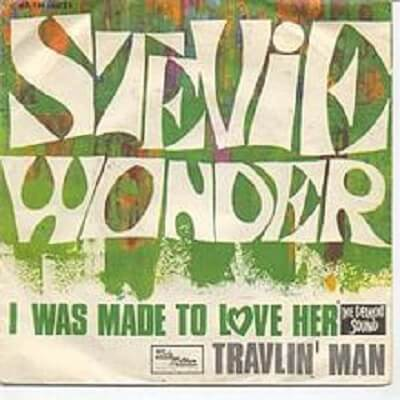

Video
La canción fue publicada en el año 1967 y Stevie Wonder formó parte de la composición cuando apenas tenía 16 años. Fue uno de sus primeros grandes éxitos y la canción trata sobre su primer amor, una chica llamada Angie.

Letra
I was born in Lil' Rock,
Had a childhood sweetheart,
We were always hand in hand.
Nací en Lil' Rock
tenía un amor de infancia
siempre íbamos de la mano
I was hightop shoes and shirt tails,
Suzy was in pig tails,
I know I loved her even then.
Yo llevaba zapatillas y camisa
Suzy llevaba coleta
ya entonces sabía que la amaba.
You know my papa disapproved it,
My mama boohooed it,
But I told them time and time again,
"Don't you know I was made to love her,
Built a world all around her"
Yah! Hey, hey, hey.
Sabes que mi padre lo desaprobaba
mi mamá lloraba
pero les dije una y otra vez
"¿No sabéis que fui hecho para amarla
(y) construir mi mundo a su alrededor?"
¡Sí! Hey, hey, hey
She's been my inspiration,
Showed appreciation
For the love I gave her through the years.
Ella ha sido mi inspiración
mostró su agradecimiento
por el amor que le di a través de los años
Like a sweet magnolia tree
My love blossmed tenderly,
My life grew sweeter through the years.
Como un dulce árbol de magnolia
mi amor floreció tiernamente
mi vida se hizo más dulce a través de los años
I know that my baby loves me,
My baby needs me,
That's why we made it through the years.
Sé que mi Nena me ama
mi Nena necesita
es por eso que lo hicimos durar a lo largo de los años
I was made to love her,
Worship and adore her,
Hey, hey, hey.
Fui hecho para amarla
venerarla y adoradla
Hey, hey, hey
All through thick and thin
Our love just won't end,
'Cause I love my baby, love my baby. Ah!
en las buenas y en las malas
nuestro amor no terminará
porque amo a mi Nena, amo a mi Nena, hey
My baby loves me,
My baby needs me,
And I know I ain't going nowhere.
Mi Nena me ama
mi Nena me necesita
y sé que no voy a ninguna parte
I was knee high to a chicken
When that love bug bit me,
I had the fever with each passing year.
Era todavía un niño
cuando ese bicho del amor me mordió
tuve la fiebre con cada año que pasaba
Oh, even if the mountain tumbles,
If this whole world crumbles,
By her side I'll still be standing there.
Oh, incluso si la montaña se derrumba
si este mundo entero se desmorona
a su lado seguiré.
'Cause I was made to love her,
I was made to live for her, yeah!
Porque fui hecho para amarla
fui hecho para vivir por ella, ¡sí!
Ah, I was made to love her,
Built my world all around her,
Hey, hey, hey.
Ah, fui hecho para amarla
(y) construir mi mundo a su alrededor
Hey, hey, hey
Oo baby, I was made to please her,
You know Stevie ain't gonna leave her, no,
Hey, hey, hey.
Oh, cariño, fui hecho para complacerla
Sabes que Stevie no va a dejarla, no
Hey, hey, hey,
Oo wee baby, my baby loves me,
My baby needs me,
Hey, hey, hey.
Oh, wee nena, mi nena me ama,
mi nena me necesita
Hey, hey, hey,
OO my baby loves me.
Oh, mi nena me necesita